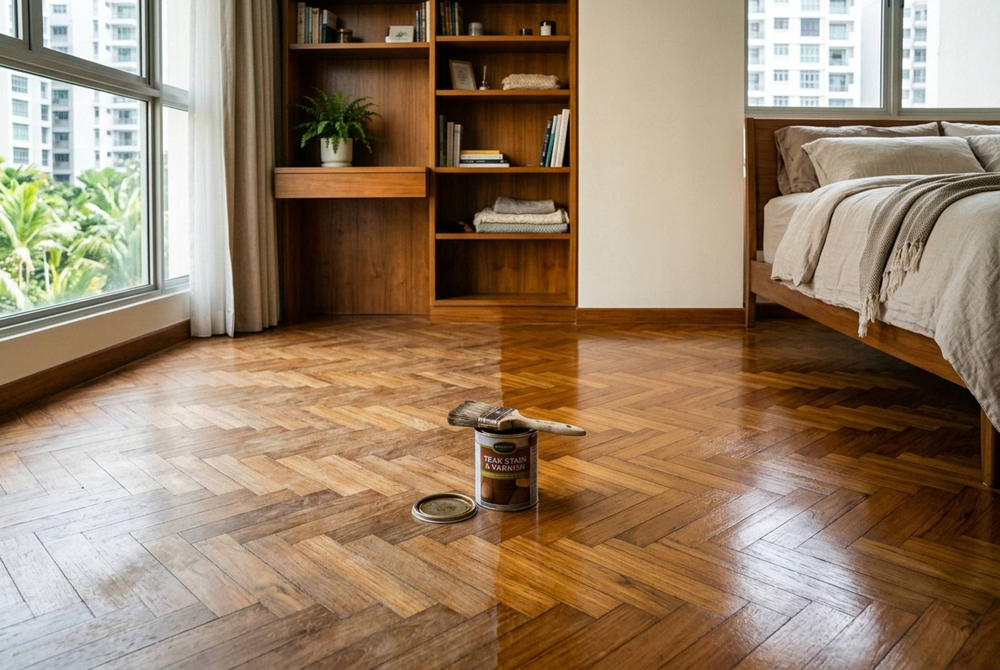

Parquet and timber varnish: recoat, or sand back?

Most tired timber floors in Singapore do not need sanding. If the wear is in the finish, dull traffic paths, fine scratches and a grey cast, a clean, light abrasion and a fresh coat of lacquer brings the wood back in a day. Sanding to bare timber is only needed when the wear has gone into the wood. On a recent two-bedroom condo move-out, lacquer varnish to both bedroom floors, a built-in bookshelf and a wood feature wall came to $430.
Recoat or sand back: how to tell
Look at the worn areas in daylight and run a fingertip over them.
| What you see | What it means | Fix |
|---|---|---|
| Dull paths where people walk, fine surface scratches, finish looks grey or cloudy | Wear is in the finish only | Recoat: clean, light abrasion, new coat |
| Scratches you can feel with a nail, but the wood colour is the same | Finish worn through in places | Recoat usually works; deep spots may need local sanding |
| Bare grey or black wood, water marks gone into the timber | Wood exposed and stained | Sand back to bare timber and refinish |
| Loose, lifting or hollow-sounding blocks | Adhesive has failed | Re-lay those blocks first, then sand |
| Soft, crumbling or tunnelled wood | Possible termite damage | Inspect before any finishing |
A recoat takes the least off the floor and costs the least. Parquet blocks can be sanded several times over their life, but each sanding removes wood, so there is no reason to sand a floor that only needs a new coat.
A real varnish job: $430
September 2026, a two-bedroom condo at The Pier at Robertson, done as part of a move-out. The line on the invoice read: lacquer varnish to master bedroom and common bedroom floors, master bedroom bookshelf and living room wood wall, $430.
Two things are worth noticing. First, it covered built-in woodwork as well as floors: shelving and a timber feature wall wear in the same way, with hand marks, dull patches and a faded finish, and they are done with the same material in the same visit. Second, it sat on the same invoice as a $480 deep clean and a $280 paint touch-up, for a total of $1,190. Timber that looks like it did at the start of the lease is a large part of what makes a unit read as well kept at handover. See our move-out packages.
Lacquer, PU or oil?
- Lacquer. Dries quickly, gives a clear, even sheen, and can be recoated easily. Well suited to refreshing floors and built-ins in an occupied or about-to-be-vacated unit, because the room is back in use sooner.
- Polyurethane (PU) varnish. A harder, more abrasion-resistant film, often chosen after a full sanding for high-traffic floors. It takes longer to cure fully.
- Oil finishes. Soak into the wood for a natural, matt look and are easy to spot-repair, but need more regular maintenance and are less common on Singapore parquet.
The key rule is compatibility: a new coat has to bond to what is already on the floor. That is why the preparation includes cleaning off polish and silicone residue from floor cleaners, and a light abrasion so the new coat has a key. Many supermarket "shine" floor cleaners leave a film that stops a recoat from bonding.
Sheen matters too. Matt and satin finishes hide scratches and dust far better than gloss, which is why we usually recommend satin for floors.
What it costs
| Job | Indicative cost (SGD) |
|---|---|
| Lacquer recoat, 2 bedroom floors + bookshelf + wood wall (real job) | $430 |
| Lacquer recoat, single bedroom floor | From about $150 |
| Full sand-back and refinish, parquet | Priced per square foot, typically several times a recoat |
| Re-laying loose parquet blocks | Quoted after inspection |
A full sanding costs several times more than a recoat because it involves a drum sander, several grits, dust extraction, filling gaps, and usually three coats of finish with drying between each. It is the right job for a floor with bare, stained wood, but a waste of money and timber on a floor that is only dull.
What cannot be varnished
Vinyl, laminate and SPC flooring look like timber but have a factory wear layer, not a finish that can be recoated. Varnish will not bond to them properly and may peel. Worn vinyl or laminate is replaced rather than refinished; see vinyl vs laminate flooring. Engineered timber has a real wood top layer, but it is thin, so it can take a recoat and at most a very light sanding.
Check for termites first
Parquet and timber built-ins are exactly where termites are found in Singapore flats, and refinishing a floor that has live activity underneath seals the problem in. Warning signs: blocks that sound hollow, soft spots, mud tubes along the skirting, or fine tunnels in the wood. If there is any sign of it, have it inspected and treated by a pest control specialist before finishing.
Timing and living with it
- Clear the room. Floors must be empty.
- Clean and degrease to remove polish and cleaner residue.
- Light abrasion for a recoat, or sanding through the grits for a full refinish.
- Vacuum and tack off all dust.
- Apply the finish, working towards the door.
- Let it dry. Keep off it for several hours with a lacquer recoat, longer for PU, and wait before putting furniture back.
Ventilate while it dries; solvent-based finishes have a strong smell for the first day. For a move-out, varnish is done before the final clean so the floors are finished and dry on inspection day.
Frequently asked questions
How much does it cost to varnish a parquet floor in Singapore?
A lacquer recoat of a single bedroom floor starts from about $150. On a real RK E&C job in September 2026, lacquer varnish to two bedroom floors, a built-in bookshelf and a wood feature wall in a two-bedroom condo came to $430. A full sand-back and refinish is priced per square foot and costs several times a recoat.
Do I need to sand my parquet floor before varnishing?
Not if the wear is only in the finish: dull traffic paths, fine scratches and a cloudy look. A clean, light abrasion and a new coat is enough. Sand back to bare timber only when the wood itself is exposed, stained or damaged.
How long does varnish take to dry?
A lacquer recoat can be walked on carefully after a few hours; PU varnish takes longer. Wait longer again before putting furniture back, and ventilate the room while it dries.
Can you varnish vinyl or laminate flooring?
No. Vinyl, laminate and SPC have a factory wear layer that varnish will not bond to properly. Worn vinyl or laminate is replaced rather than refinished.
Can you varnish built-in shelves and wooden walls too?
Yes. Timber shelving, wardrobes and feature walls wear the same way as floors and are refreshed with the same lacquer in the same visit, as on our $430 job that covered floors, a bookshelf and a wood wall.
Getting it done by RK E&C
RK E&C is a Singapore-registered renovation and handyman company (UEN 202442767D) doing flooring, carpentry, painting and varnishing in HDB flats and condos island-wide. We look at the floor before quoting and will tell you if a recoat is enough, which it usually is. Because we also do carpentry and painting, built-ins and walls can be refreshed in the same visit.
Send photos of the floor in daylight, including a close-up of the worst area, through our contact form or WhatsApp.
Timber floors looking tired?
Send a daylight photo of the floor. We will tell you whether it needs a recoat or a full sanding, and quote a fixed price.
The $430 figure is from an actual RK E&C invoice dated 26 September 2026 for lacquer varnish in a two-bedroom condo. Other prices are indicative of the Singapore market in 2026 and are not a quotation. Floor area, condition and finish type drive the cost.